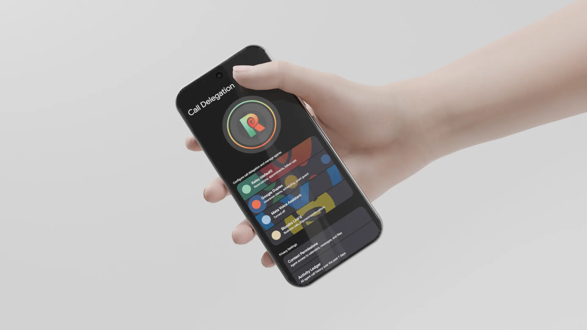
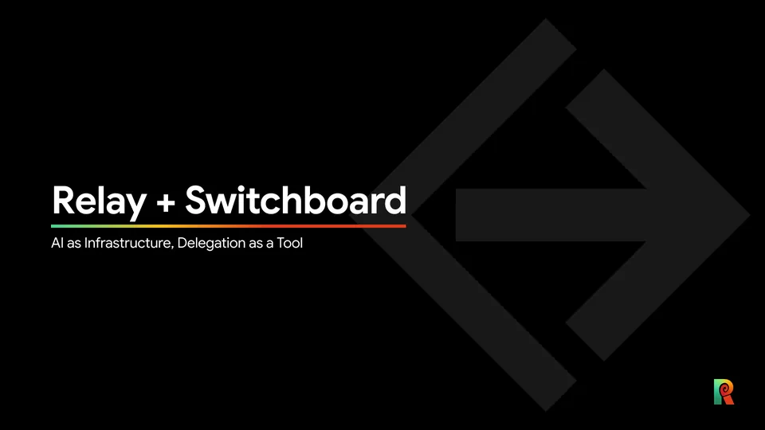
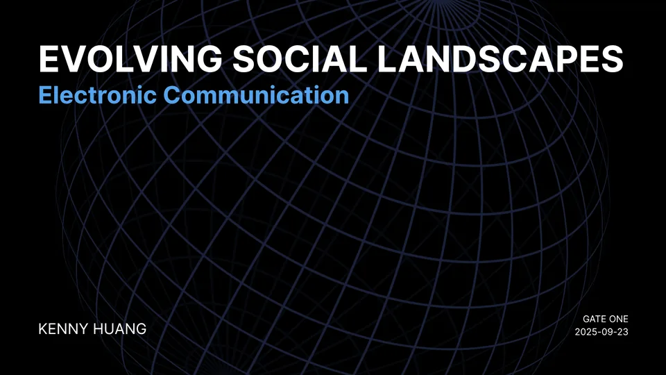
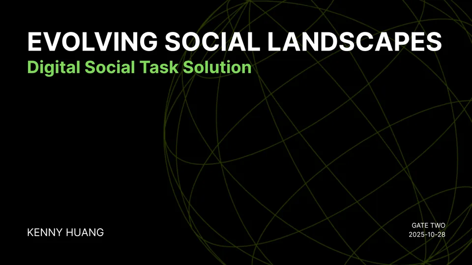
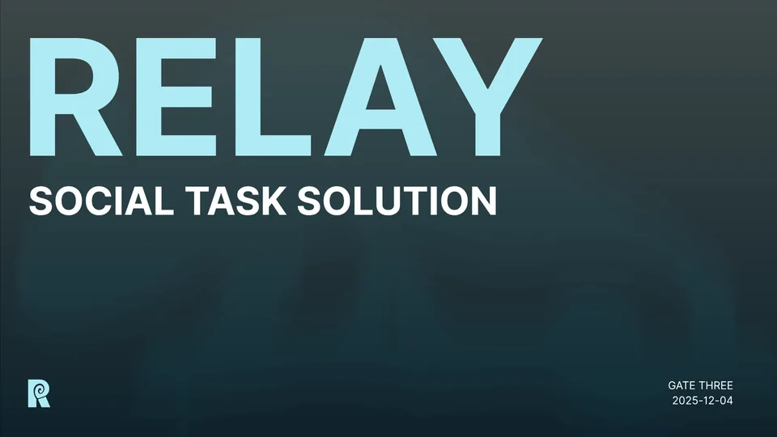
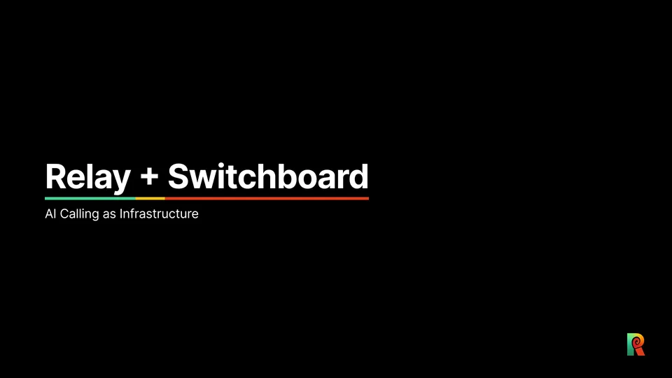
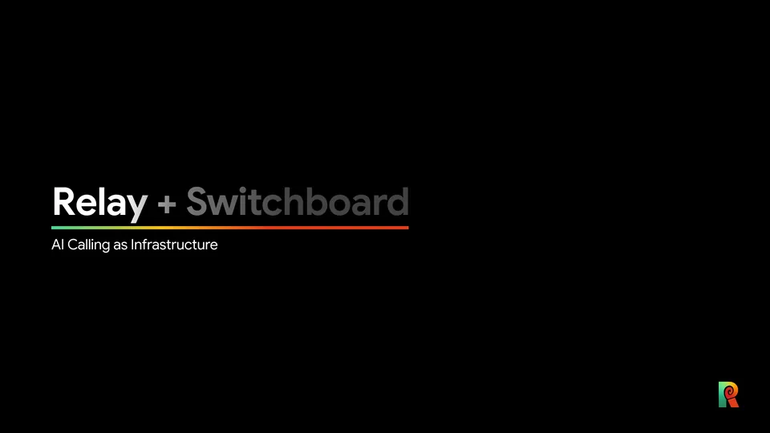

AI Calling as Infrastructure
Relay + Switchboard
- Role
- Product Designer & Developer
- Timeline
- Sep 2025 to Apr 2026
- Context
- OCAD University thesis
- Tools
- Figma, Node.js, Anthropic API, Kokoro TTS
The future of phone calls
Relay is an OS-level layer that lets you hand your phone calls to the AI agent of your choice. It makes and takes the menial calls, keeps live and post-call transcripts, learns your context over time, and relays anything complex or sensitive back to you.
Switchboard is the universal protocol underneath. It lets any AI agent, from any developer, plug into Relay and be controlled from one set of settings. Together they imagine generative AI after the hype: not a novelty you open, but infrastructure you stop noticing, like a dial tone.
The calls you don't want to make, made.
Presentation

PDF presentation, 10 MB
Thesis Final: Relay v1.5 + Switchboard v1
My final thesis presentation: where AI is headed after the hype, what Relay looks like, and why Switchboard is needed to control it.
Open the presentation84page research
document
Relay is grounded in an 84-page research document I put together over the course of the thesis. If you are interested in seeing it, please reach out to me for a 1-on-1 meeting.
PROBLEM STATEMENT
Menial phone calls are a chore nobody wants but everybody needs.
How might we integrate AI into the phone call, without making the human disappear from it?
Demo
AI as infrastructure
AI is here to stay, but it won't always be exciting. Relay looks past the peak of the hype, to the point where personal AI agents become another digital tool we live with but never think about.
Relay is what that future looks like, and it is already on the horizon. Switchboard is how we will control it. If it works, it will feel like nothing ever happened.
The phone call, reinvented
-
01
1994
Make and take calls
IBM Simon, the first smartphone, put calls in your pocket. It was bulky, and static could drown you out.
-
02
2007
One button to call
The first iPhone let anyone be heard clearly and instantly, at the touch of a button.
-
03
Next
A third option
People want to be heard without their voices being heard. Beside Call and End Call sits a third choice: relay it.
Make AI boring.
The most successful technology disappears into everyday language: we google things, we text people. Relay is designed the same way, so that one day you simply relay a call.
Relay
A personal social task agent built into your phone. Not an app, a chatbot or another assistant, but an integrated service layer that makes annoying phone calls disappear.
-
01
Makes calls, takes calls
Appointments, reservations, RSVPs, rescheduling, deliveries and simple inquiries, handed off with one button.
-
02
Text or voice, your choice
Tell Relay what you need by typing or speaking, and it carries the conversation for you.
-
03
Live and post-call transcripts
Follow the call as it happens, step in mid-call, or read the full transcript afterwards.
-
04
Knows when to hand back
Payments and complex or emotional calls are relayed back to you. It's in the name.
Relay in use
Who it's for
Anyone who can't take or make a call at a given moment, especially people with social anxiety or telephobia, people who dislike menial tasks, people with little free time, and people with speech impairments.
Built-in limits
Relay handles menial calls on its own, but it will never be authorized to disclose payment information, access personal data you haven't permitted, or clone voices.
Switchboard
If Relay is the faucet, Switchboard is the plumbing behind it: a universal protocol that lets AI voice agents from any developer take on calls through Relay, under one set of controls.
The plumbing
Relay and Switchboard are not two separate products. Relay is the consumer product, and Switchboard is the disruptor behind it, built from an API bridge, an agent SDK, a consent registry, a privacy ledger and a handshake between agents.
Why now
Companies are starting to notice that people no longer want to make phone calls. As of April 2026, Google Duplex, OpenAI's Realtime API and a wave of startups offer AI agents that can call for you, and high-fidelity agents are expected by 2027. None of them treat AI as infrastructure, or plan for how people will control it.
The trust gap
The people who stand to gain the most from AI calling are skeptical of it, because no way of controlling it exists yet. Switchboard solves this, and Relay is the proof of concept. So how do we control something designed to be universal?
By doing what we're best at: pressing buttons and flipping switches.
Process
-

Where it all started
Defining evolving social landscapes: isolation, weakening bonds, less free time and declining trust.
Open the presentation, 8 MB -

Personal background and initial research
Testing the premise, and narrowing in on people who would rather not speak on the phone.
Open the presentation, 8 MB -

Initial idea: Relay Beta
A semi-autonomous agent for everyday calls, and a third option between answering and declining.
Open the presentation, 5 MB -

Refined idea: Relay v0 and Switchboard v0
Switchboard appears, turning call delegation from a product into a utility.
Open the presentation, 11 MB -

Refined focus: Relay v1
The philosophy behind Relay, its limits, and the plan for a working prototype.
Open the presentation, 3 MB -
Thesis final: Relay v1.5 and Switchboard v1
AI as infrastructure, delegation as a tool.
Open the presentation, 10 MB
Building the prototype
A Node.js backend with Kokoro text-to-speech and the Anthropic API runs on my home desktop, reached through a tunnel, with the interface hosted online so anyone can try it.
Try the prototype
Two phones, two sides of one call. On the left, tell Relay what you need by text or voice. On the right, play the person receiving the call. The transcript builds in real time, and you decide when the call ends.
The AI behind the prototype runs on a server I host at home, so live calls are available on request. Get in touch to try a call.